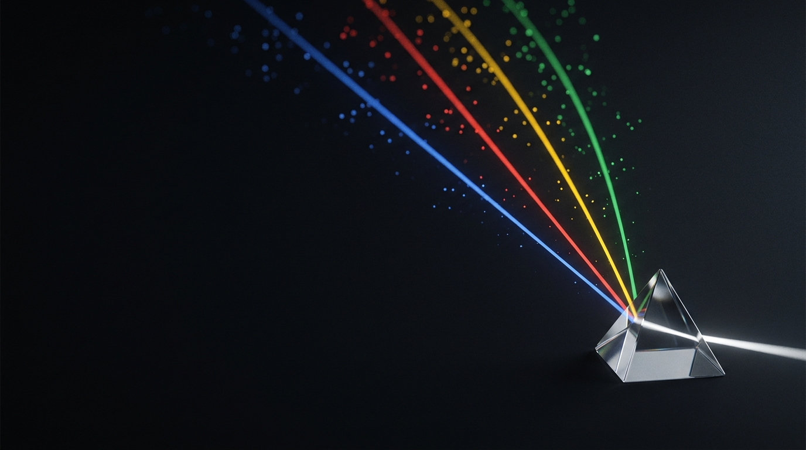

模型 × Agent
用 ADK 构建可信的 Hybrid System
Deterministic where you can, probabilistic where you must.
ADK 2.0Gemma 4Hybrid SystemsA2A
讲者备注 · 开场
一句定调，30 秒内进正题。Pills 是全场地图：ADK / Gemma / Hybrid / A2A。
ACT 1 · 设问
我们不再有智能问题。
我们有一个 控制 问题。
过去两年，所有人都在追更强的模型。接下来两年，赢的人追的是——可控。
（记住：等下有一个 2.7 亿参数的小模型，会告诉你为什么这让你们更重要。）
讲者备注 · 开场 (Option C)
thesis-first 立旗。最后一句是开场种环——只说"2.7 亿小模型"，
不报数字，§8 付清。停一拍再翻页。
ACT 1 · 问题
Agent 一上生产就裂开
Agent = 控制流由模型在运行时决定的软件。这是超能力，也是负债。
停不下来的 Loop
没有退出条件的循环，烧钱烧到超时。
无法复现
同样输入，两次不同结果——没法 debug。
讲者备注
把"agent 很强"立起来，为 §7 的隐忧埋雷。四个失败模式点到为止。落点那句过桥。
ACT 1 · THESIS
不是我的一家之言
Deterministic where you can, probabilistic where you must. 两大实验室独立收敛到同一条分界线。
Google · ADK 官方文档
"Agents… act as deterministic controllers of the execution — workflow agents (Sequential, Parallel, Loop)."
adk.dev / get-started
Anthropic · Building Effective Agents
"Workflows… orchestrated through predefined code paths. Agents… dynamically direct their own processes."
anthropic.com / research
两个领头实验室都同意——那不是 trend，是 ground truth。
讲者备注 · ★ Money beat
本场可信度支点。两句逐字念。收口："我没发明这个。"出处：adk.dev/get-started/about · anthropic.com/research/building-effective-agents
ACT 1 · WHY ADK
Why ADK？一个词：CONTROL
对非确定性的控制。下面四个 primitive，就是它的展开——不是 feature dump。
Flow
workflow + LLM agents 可混嵌套
Step
callbacks · plugins · 确认
Quality
内建 eval（11 metrics）
Context
Session · Memory · compaction · rewind
Stack
model-agnostic · A2A / MCP
讲者备注
Quality 说"11 metrics"，不是 8。 Stack 那句是 host hook，眼神给台下工程师。

ACT 2 · THE TURN
模型 × Agent
不是 model vs agent —— 是 model × agent。
讲者备注 · 分隔
呼吸一下，提示"转折来了"。慢。
ACT 2 · THE TURN
不是 model vs agent —— 是 model × agent
"你们可能在想：agent 这么强，会不会哪天就不需要 fine-tune 了？"
模型 (fine-tuned Gemma) × Agent (ADK)
Fine-tuning 让核心降熵 · ADK 让系统降熵 · 右边越大，左边越值钱
multi-agent = 团队要专家
eval/loop = 产微调数据（飞轮）
fine-tuning = 让 open 上生产
讲者备注 · ★ Money beat (host)
当众点破隐忧 → 翻转。诚实分寸：prompt/RAG 解决"知道什么"，fine-tuning 解决"怎么做/多快/多便宜/多专"。净效应：agentic 化让专精模型需求
变多。
ACT 2 · 铁证
开场那个 2.7 亿参数小模型 = FunctionGemma
58% → 85%
Gemma 3 · 270M · fine-tuned for function calling · 跑在边缘（手机 / Jetson）
"for edge agents, a dedicated, trained specialist is an efficient path to production-grade performance."
— Google · blog.google / FunctionGemma
那就是你的 router。那就是你们的产品。
讲者备注 · ★ Money slide
付清开场的环。已多来源核实（DeepMind / ai.google.dev / HF / Ollama）。"router"是我的框架、非原话。让数字停 2 秒。
ACT 2 · 方法
四个 primitive = 四种 control
ADK 给你对非确定性的四层控制——下面每一层，都是你 fine-tuned Gemma 的位置。
Compose
确定性外壳 + LLM 内核
workflow agent 包住会推理的核
被包住的"思考"步 = Gemma→
Orchestrate
协作 + 动态编排
coordinator 运行时决定谁上
每个 specialist = 一个 Gemma→
Iterate
generate → critique → refine
+ 退出条件，不是 vibe
critic = 便宜的 Gemma judge→
Judge
eval 当控制信号
loop 出口 · router 闸 · guardrail
traces = 下一轮微调数据
讲者备注
全场骨架。每张只讲一句 + 它的 Gemma hook。Judge 是连接组织——下一页用代码落地 Compose。
ACT 2 · 方法
Hybrid，落到代码里
research_agent.py
from google.adk.agents import (
SequentialAgent, LoopAgent, LlmAgent)
research = SequentialAgent(name="research", sub_agents=[
plan, # LlmAgent · Gemini 推理
LoopAgent(name="dig", max_iterations=4,
sub_agents=[search, extract, critic]),
# critic = fine-tuned Gemma
synthesize, # LlmAgent · Gemini 合成
])确定性外壳，LLM 内核
Sequential / Loop 决定流程——不咨询模型，可预测。包在里面的 LlmAgent 才负责推理。
退出条件交给 critic：一个便宜的 fine-tuned Gemma judge。这段代码，就是 "deterministic where you can, probabilistic where you must"。
讲者备注
给技术听众一个"真能写出来"的锚点。
别说 template agents 被 deprecated——2.0 是 "superseded by" graph/dynamic，三个仍可用。
ACT 2 · 兑现
把四个 primitive 拼成一个系统
深度研究 agent：前三步 = fine-tuned Gemma，合成 = Gemini。Frontier when you must, open when you can.
→
LoopAgent · 退出 = eval
→
→
→
Session / State
当前对话（4 种 scope）
MemoryService
跨 session 语义召回
讲者备注
最好接你真跑的深度研究 agent 录屏。memory 一次讲完，别单开节。dev 全 in-memory，prod 一行换 Database/Vertex。
ACT 3
未来已经在发生
ADK 2.0 · 开放协议 · 你们的位置
讲者备注 · 分隔
从"方法"转到"这是不是一时风潮"。下面用证据回答。
ACT 3 · ADK 2.0
框架，长成了这套架构
Deterministic graph
图引擎里的确定性工作流
Dynamic
code-driven 的 loop / branch
Collaborative
coordinator + 多 subagents
讲者备注
2.0 是
证据不是头条。台词："Google 把这场 talk 的结构 ship 成了 runtime。"
统一说"三大支柱"；版本号当天早上复核。
ACT 3 · 开放栈
Interop 是新的护城河——而且是开放的
A2A 2025-06-23 捐给 Linux Foundation；进了 Azure AI Foundry · AWS Bedrock AgentCore · Google Cloud。MCP = agent↔工具 · A2A = agent↔agent，ADK 两个都说。
AWS、Microsoft、Google ship 同一个协议——那是未来在自报家门。
讲者备注 · ★ Money beat
创始 7 家里 AWS、Google、Microsoft 三大云全在——最有分量。已多来源核实（LF press · PRNewswire · IBM）。收口接回 host。
收束
带走三句话
1
画那条线
Deterministic where you can, probabilistic where you must.
2
模型 × agent
fine-tuned Gemma 与 ADK 互相成就。右边越大，左边越值钱。
3
ADK = control
Compose · Orchestrate · Iterate · Judge。
讲者备注
三句话收口。大数字让它读作 takeaways。
模型 × agent —— 右边越大，左边越值钱
我讲的是 × 号 右边——怎么把一群专家，组成一个你敢信的系统。
接下来 [同事] 会讲 × 号 左边——怎么先把 Gemma 调成那个专家。
两半合起来，才是完整的 stack。
ADK 2.0Gemma 4A2AMCP
讲者备注 · 前向交棒
同事在你
之后讲：这里是 forward pass，不是接球。把"× 号左边"交给他，自然衔接他的 fine-tuning 场。和 title 做 bookend。